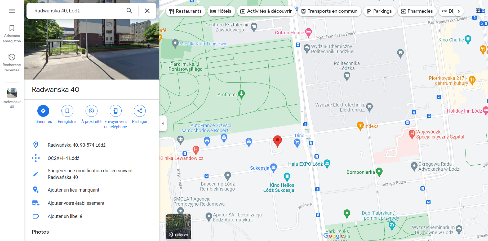
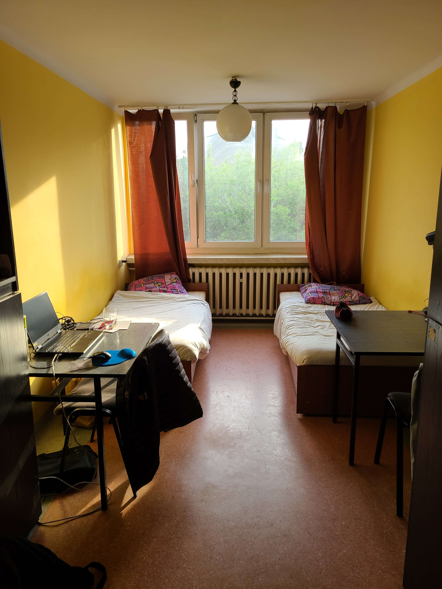
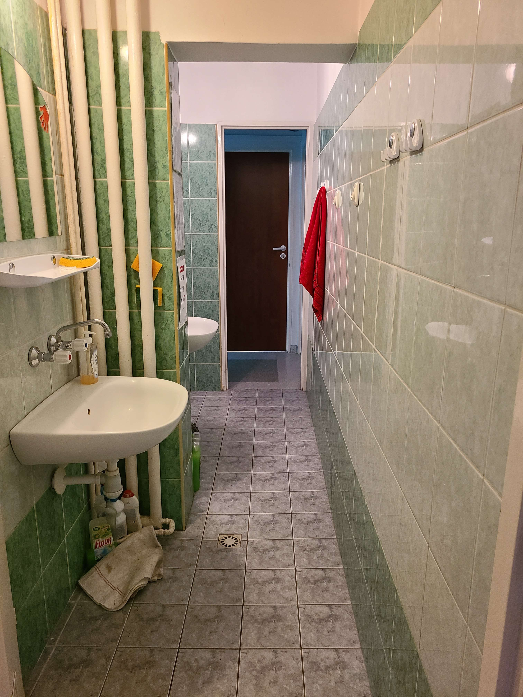

Lifestyle
My experience as an Erasmus student
Context
When I entered the Group ESAIP engineering school, I knew that we need to go study abroad twice if we wanted to get the degree.
Now, it’s been 3 years since I integrated my school, and this is my first Erasmus semester.
I will go back home in a month so; I think I have enough experience to tell you what I think and how I feel about it.
My destination
Like each year, my school sent all their 3-years students to study abroad. She has a lot of partners in foreign countries in Europe but also in South America.
They proposed to student the list and we must make 3 wishes. The first Erasmus semester must be in English speaking countries, so South America’s countries were not proposed.
As a French student, it is easy for us to have the opportunity to go in UK, so, I wanted to go in a country that I will not have the opportunity to go easily, and I also wanted to go in a country where I didn't know the culture.
My parents already pay for the school so they can’t really pay more to help me abroad.
For these reasons, I choose to go in Poland because I didn’t know that country and it was cheaper than France. I could choose my university between Warsaw or Lodz, and I decided to choose Lodz because the students who went in Warsaw said: “It was very hard for us to pass their exams and only 30% or 40% succeed in it” and because the life was cheaper than in the capital of Poland.
How I live?
When I registered to Lodz’s University, they proposed to me to book a room in the university’s dormitories, and I accepted.
So now, I am living in a room of 12 m² room on the third floor near my school with a roommate, and we share the bathroom with 3 other rooms.
There is only one shared kitchen for the whole floor. The price is 500 zloty for each month (~110€) so it is very cheap compared to France.

The dormitory 8 located near the university.

A view of my student room.
The hygiene is correct, sometimes people are dirty so be prepared. In general, there is no problems.
Since my roommate left the room and my neighbours went back home, it is comfortable because I have more space (too much for my stuff) to put my clothes, my books...etc and the bathroom look like always free.

How looks like my bathroom (shower on the left side at the end of the corridor).
I used to travel in the city by feet because my dormitory (number 8) is situated in the center of the university that is very convenient because the campus A and B are only 10 minutes far by feet.
There is a little supermarket near my dormitory (50m) and if I want a real and big supermarket, Auchan is 15 minutes far from my dormitory with same products than in France, so I’m not disturbed with that.
In the next part I will talk about how I felt during the experience, what I did during this time and how was my experience with local people.
I hope you enjoyed reading this article, see you in the next one!
Sources: